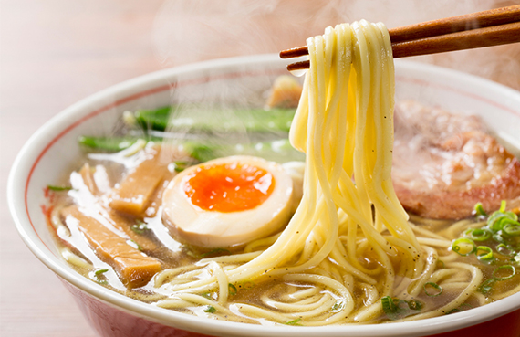

Guía básica de Ramens Coreanos y Japoneses
Publicado el 1 de Septiembre, 2026

El ramen se ha convertido en una verdadera insignia cultural de Asia oriental, pero existen grandes diferencias entre la preparación tradicional japonesa y la versión coreana.
1. El Ramyun Coreano (Instantáneo)
En Corea del Sur, el término Ramyun se refiere casi exclusivamente al fideo instantáneo preparado con caldos concentrados y picantes (como el famoso Buldak o Shin Ramyun). Se suele cocinar directo al fuego con queso, huevo y cebollín.
2. El Ramen Japonés (Artesanal)
En Japón, el ramen es un platillo complejo de caldo lento elaborado a base de huesos de cerdo (Tonkotsu), salsa de soya (Shoyu), o miso. Sus fideos son frescos y se acompaña de toppings como chashu (cerdo marinado) y huevo ajitsuke.
Consejo Sakura Market: Si buscas intensidad picante elige Ramyun Coreano; si prefieres caldos aromáticos y profundos elige un estilo Japonés tradicional.